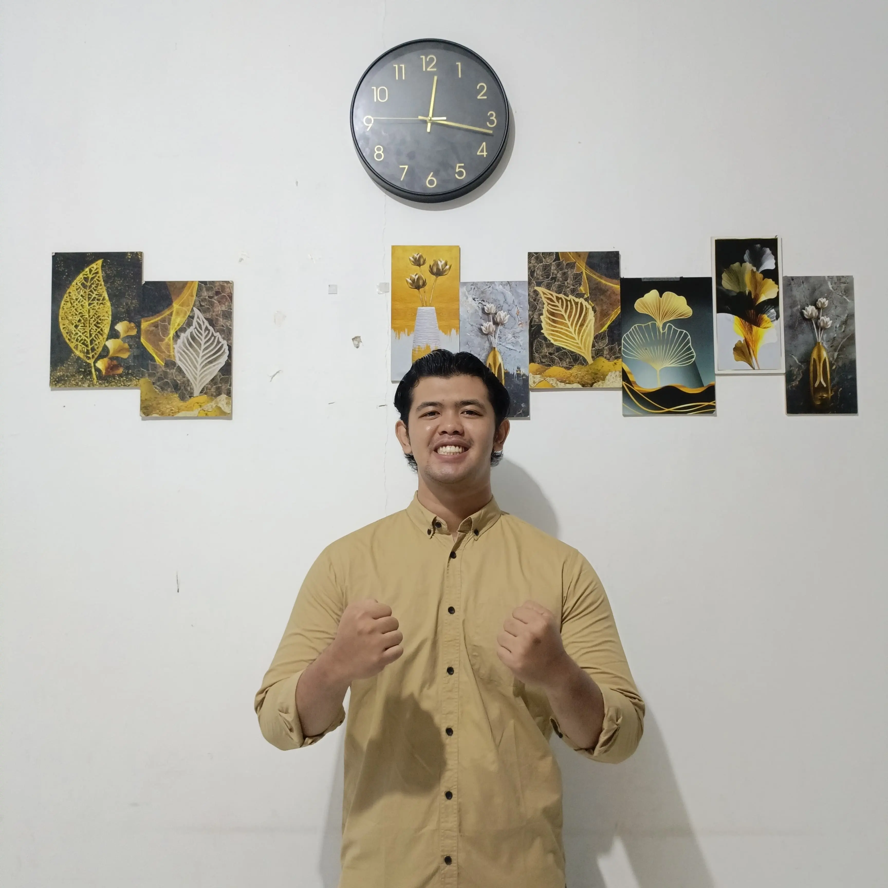

About Me
Saya adalah seorang mahasiswa IT yang memiliki pengalaman dibidang Programing seperti Front-End Dev, Back-End Dev, UI/UX Design, serta Mobile Developer. Diluar itu semua saya memiliki beberapa hobi sekaligus keahlian lain yaitu seorang GYM Trainer, Badminton Player, dan Biliard HC 1. Itu semua saya dapatkan karena dedikasi yang tinggi serta kedisiplinan yang selalu saya agungkan demi mewujudkan cita-cita dan keinginan saya.
